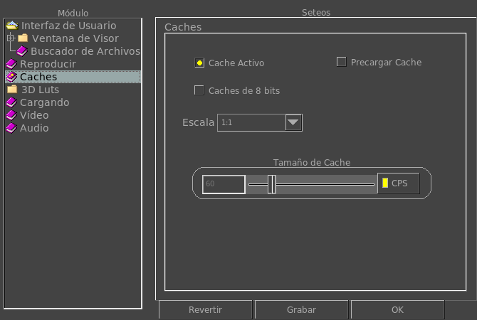

|  |
When this option is turned on, mrViewer will cache image sequences in memory. With this option, mrViewer will cache images as 8-bits only (as they are displayed) instead of in half or float format when possible. With this option, mrViewer will cache images at full (1:1), half (1:2) or quart,quarter (1:4) or one eighth (1:8) of the original resolution. This option is intended to save memory when the sequence is very long. With this option on, the actual size of the cache will be determined by the Frames Per Second (FPS) and the cache size will be disregarded. When FPS is off, this value determines the number of maximum frames in the cache. The cache is a backwards cache except when playing backwards and during scrubbing the cache is a two way cache. |